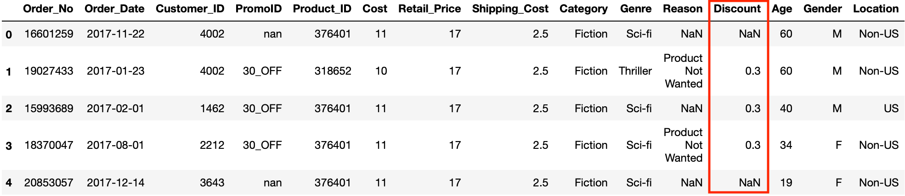
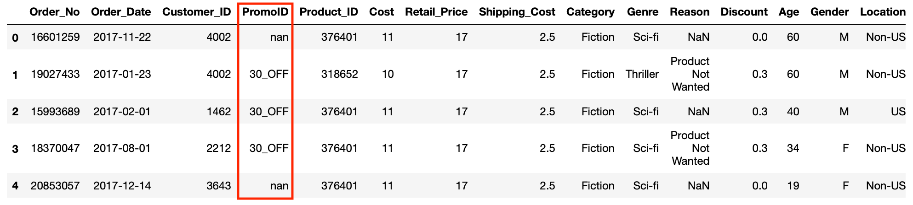

.png)
Cleaning data often involves some combination of the following:
We do this primarily to make sure that the data is correct and that any future operations we perform on the data will work as we expect. It’s actually rare to work with a data set that’s clean from the get go and data scientists and analysts often end up spending a large amount of time cleaning before making further use of the data.
When we work with Pandas or other libraries in the Python data science stack, certain operations can only be performed on certain data types i.e. we can’t divide by a string. It’s therefore essential that each column is set to contain the correct data type for it’s intended use.
There are a number of data types you can use in Pandas but commonly we use integers, floats (decimal numbers), strings (in Pandas they are named as object data types) and datetimes. When you import data into Pandas, it will make an educated guess on what the data type is but, for various reasons, we will often want to change those data types.
If you call the dtypes command on our data frame you will see the columns names with corresponding data types and you will see that Order_No, Customer_ID and Product_ID are listed as integers.
This makes sense as they’re made up solely of numbers so Pandas logically assumes that’s what they are. However, in our case we need know that these represent identifiers and therefore act as names rather than to express some value. It’s possible that in future these could contain letters as well as numbers so let’s convert these to strings in order to future proof our processing.
To convert to integers, floats and strings we can use the astype Pandas operation and pass in the data type we want to convert to as a parameter.
We can pass in int for integer, float for float and str for strings so let’s convert the Order_No, Customer_ID and Product_ID columns to strings by passing str as a parameter.
When we imported our orders csv we already specified that the Order_Date column should be imported as a date time. If we didn’t specify this when we read the csv then Pandas would have assumed the column contains strings. You can however still convert a columns to date time after import using the Pandas to_datetime operation. The code below shows how we would do this if Order_Date had been imported as a string:
We will often see NANs in our data to represent missing values. These can occur for various reasons: sometimes because they’re simply missing in the raw data or because they are the result of non-matching rows from left or right outer joins. How we deal with this will depend on the particular use case and vary depending on what we are trying to achieve but Pandas comes with two ways to handle them out of the box. The fillna operation allows us to fill the NaNs with a value we define and can be applied to a whole data frame or a subset of columns.
In our data frame, the Discount column contains NaNs because some of the orders did not have a discount applied and therefore those orders did not appear in the original promotions data source. This resulted in NaNs when the two data sources were joined through a left outer join.
Let’s fill the NaNs in this column with zeros.
This will enable any calculations or aggregations we do with the Discount value to perform correctly as often operations involving NaNs just result in other NaNs. Again here, we perform the operation directly on the data frame by using the inplace=True parameter.
In addition to fillna, Pandas also has the dropna operation for when the presence of NaNs indicates a row that is not needed. This operation simply drops any rows that contain NaNs and can be applied like this:
df.dropna(inplace=True)
We can also use it to drop any columns with NaNs by using the axis=1 parameter.
The fillna operation can be thought of as a special case of the Pandas Replace operation. The Replace operation simply replaces any value in your data frame that you specify with another value that you define.
In the PromoID column we can see that some of the values are “nan” (which is a string rather than a genuine NaN).
The reason we don’t get a genuine ID in there is because that order was not ordered as part of a promo so let’s use the replace operation to replace “nan” with the string “Full Price”.
This will enable us to differentiate our data based on whether a product was ordered as part of a promotion or at full price. Once again, we perform the operation directly on the DataFrame as we don’t want to keep the original values.
Finally we are going to remove any duplicate rows in our data frame. Duplicate rows can cause double counting and misrepresentation of the values in our data. To solve this Pandas provides us with the drop_duplicates operation. Every row in our data frame should be unique so we can perform the operation over the whole data frame like this:
A key thing to remember is that cleaning data can be a tricky task and can cause issues if not done correctly. Often this requires some prior investigation of the data and some knowledge of the subject the data is describing but is something that you build an instinct for with experience. Although we haven’t done it here, sometimes cleaning individual data frames is necessary before joining them together. Every data set is different and will require a different set of steps when cleaning so it’s important to spend some time to carefully perform this part of processing and to understand how different errors in your data will affect the task you intend to use it for.
If you look through our data frame you will see we still have one column that needs cleaning. As an exercise, explore the data frame, identify what needs to be cleaned and apply a solution.
We needed to fill the NaNs in the Reason column. We have chosen to fill with a “Not Returned” string so that we can differentiate between returned and non-returned orders but any string that would do the same job is acceptable.